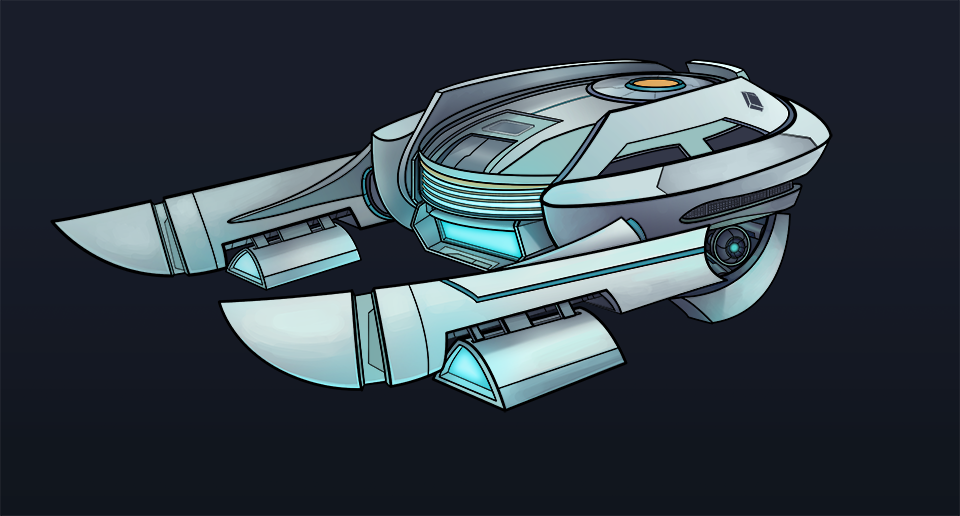
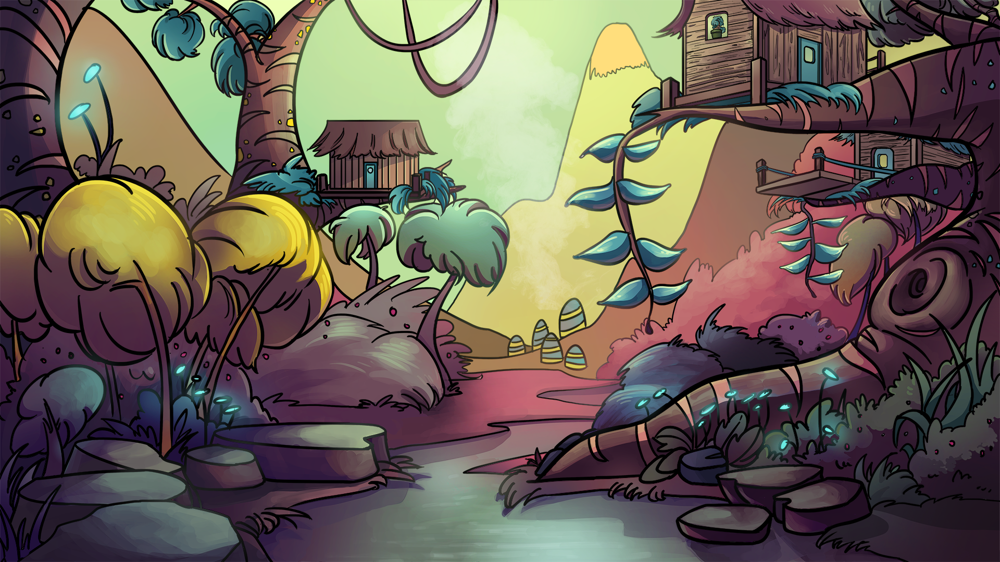
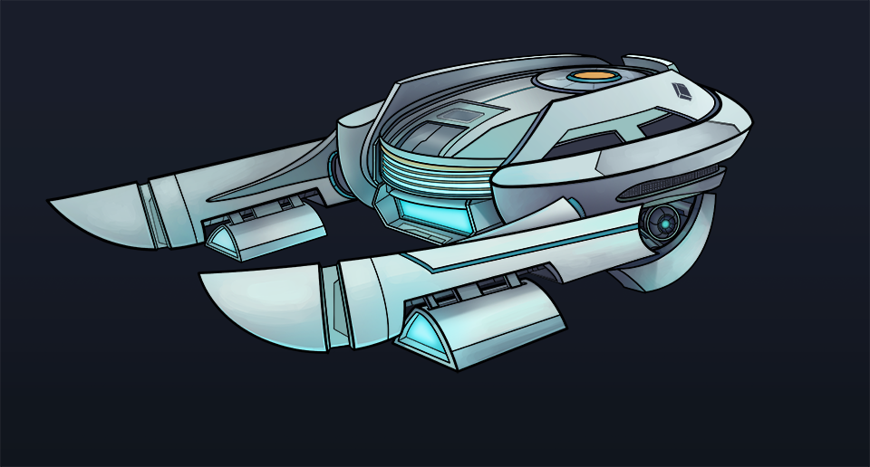
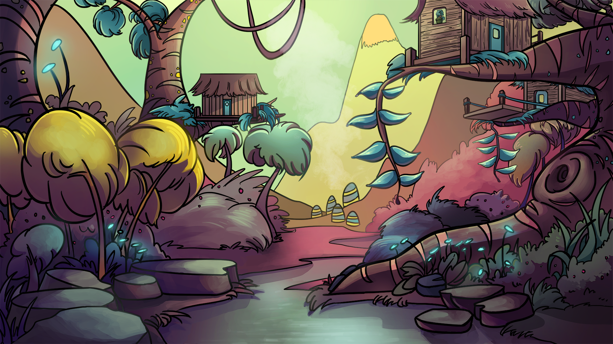

Source Academy
Overview
Source Academy is a web-based platform for interactive learning, designed around the Structure and Interpretation of Computer Programs (SICP) textbook, and used for the CS1101S: Programming Methodology I course. Built and maintained by students of National University of Singapore (NUS). I began work on it as a junior developer in my 2nd year, and continued to work as a senior developer until graduation as part of the leadership team.
Project Timeline
Jul 2021
Development as a junior developer.
Aug 2022
Development as a senior developer & part of 2022 Leadership team (Rook).
Jan 2023
Beginning of UROP Research Project under Source Academy.
Aug 2023
Development as a senior developer & part of 2023 Leadership team (Merlin).
Aug 2024
Development as a senior developer & part of 2024 Leadership team (Strange).
Project Gallery
 


